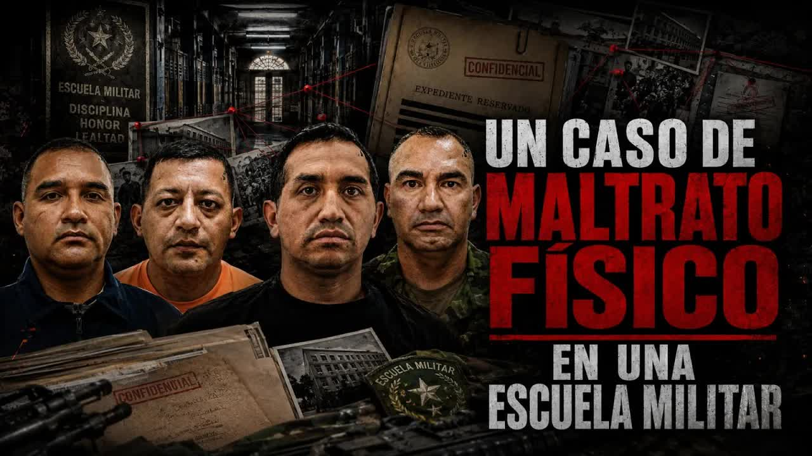
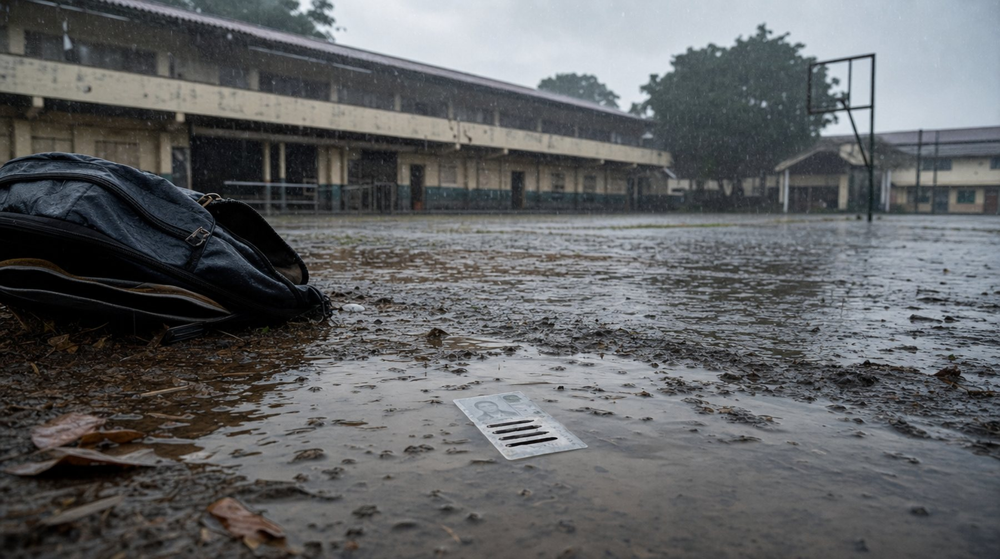
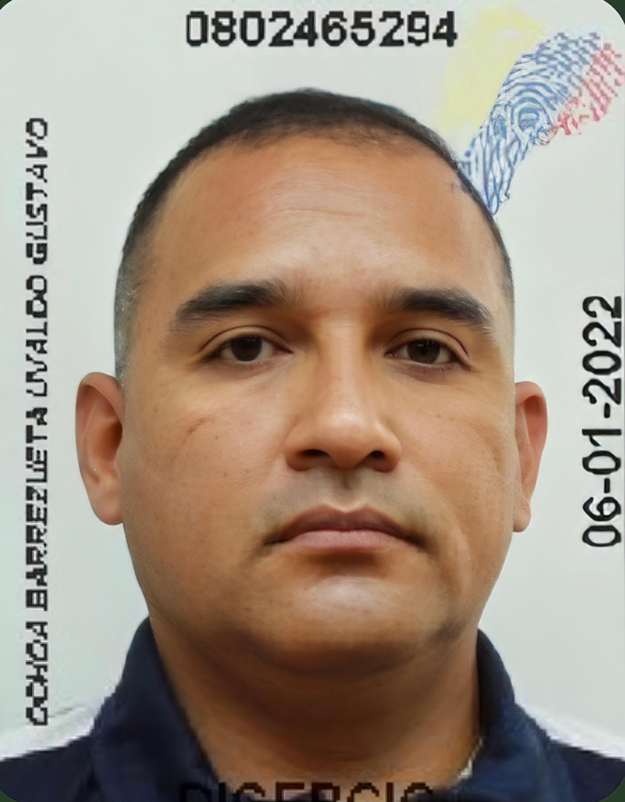
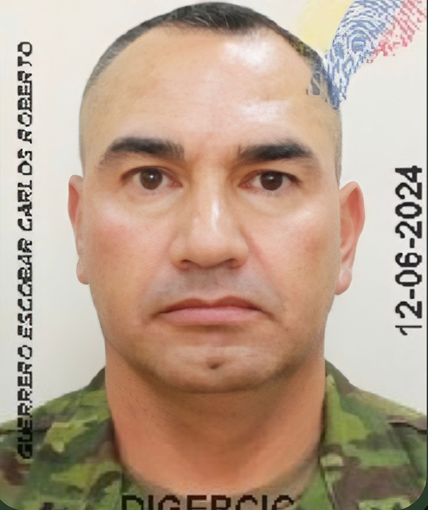
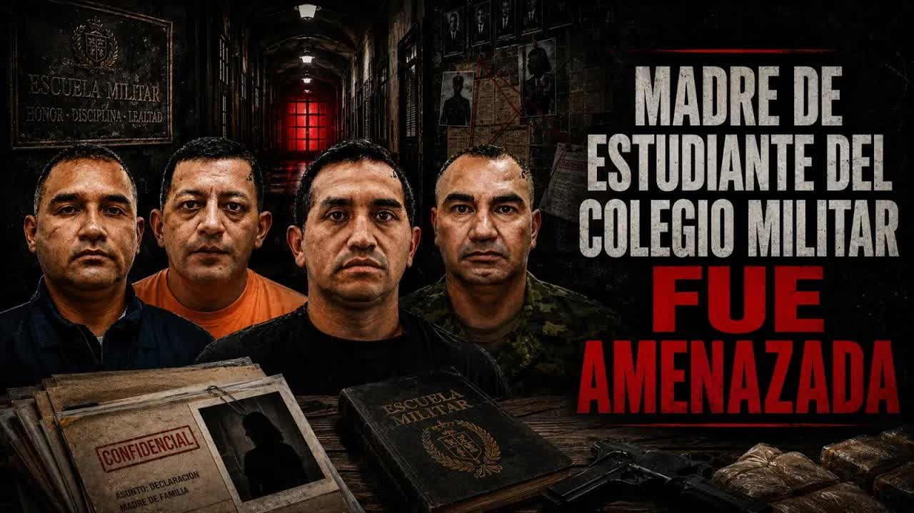

27 ago · La llave militar y las amenazas
Un sargento del Colegio Militar Miguel Iturralde de Portoviejo aplicó una llave en el cuello a un estudiante de 17 años y lo hizo arrojar al lodo. Cuando la madre denunció, el rector le pidió callar y llegaron amenazas de muerte con una copia de la cédula que solo tenía el colegio. Tras la publicación, Ochoa y el rector salieron del cargo, y la Asamblea y dos ministerios abrieron investigaciones.
Copia con el mismo error de impresión que la del expediente del colegio

El estudiante tiene 17 años, cursa el tercer año de bachillerato y está por graduarse del Colegio Militar N.º 7 Miguel Iturralde, en Portoviejo, Manabí. Su madre lo matriculó ahí porque quería una educación disciplinada y está acostumbrada a la severidad de la academia: limpiar, hacer ejercicios, cumplir órdenes. El chico tiene una condición médica: si toca superficies con lodo, la piel le erupciona de forma severa. Por eso tenía un certificado médico que lo excusaba de esas actividades.

El 11 de julio de 2026 le pidieron una actividad que involucraba lodo. Se negó. Según la denuncia presentada ante las autoridades por la psicóloga del colegio y por la madre, y según los relatos de sus compañeros que el programa escuchó, el sargento Ochoa, de 45 años, lo tiró del brazo, lo llevó al suelo y le aplicó una llave militar en el cuello para restringirle la movilidad, hasta que el estudiante no pudo seguir pidiendo auxilio. Después obligó a otros alumnos a sujetarlo y cargarlo, y entre todos lo arrojaron al lodo mientras lo golpeaban. El estudiante quedó con daños físicos y con sus pertenencias dañadas. Un informe médico de esos mismos días registró lesiones, signos físicos y la reacción alérgica.
Es un caso más o menos típico de escuela militar, de un gorila que se les ha metido en la planilla de profesores y que cree que en la escuela militar no solo hay que imponer disciplina, sino repartir palo y llaves militares a menores de edad.
Andersson Boscán, 27 de agosto de 2026
La denuncia de la madre señala por presunta violencia física al sargento Ochoa, al sargento Lara y a otros instructores. Boscán mostró al aire la cara y el nombre de Ochoa. Para él, la agresión por sí sola no habría llegado al programa. Lo que la convirtió en un caso fue lo que vino después.

Presentada la denuncia, alguien del colegio le habló a la madre. Le ofreció hacerle el trámite para cambiar a su hijo de plantel, porque estaba fichado. Fichado, según le explicaron, significa que no lo iban a dejar graduarse en la academia militar. El estudiante agredido pasaba a ser el problema por haberse quejado con su madre.

Llévese a su hijo, nosotros le hacemos el trámite para que lo cambie de colegio, porque su hijo está fichado.
Mensaje del colegio a la madre, según el relato de Andersson Boscán al aire, 27 de agosto de 2026
El rector del colegio, Carlos Guerrero Escobar, le pidió a la madre que no pusiera la denuncia, para que todo siguiera como si nada hubiera pasado. Y la amenazó: que cuidado se le ocurría grabarlo. Boscán mostró su foto y su nombre al aire y le pidió que explicara a las autoridades educativas por qué protegía a quien golpea a sus estudiantes.
El 17 de julio de 2026, a las 23:32, la madre empezó a recibir mensajes y llamadas. Quien escribía decía ser de un grupo de delincuencia organizada, la amenazaba de muerte, le exigía una respuesta y le advertía que no los bloqueara. Le decían que hablaba mucho, la insultaban y la presionaban para que se fuera del lugar. Hubo también grabaciones de voz.
Para demostrarle que sabían dónde vivía, le enviaron la foto de su cédula y la de su hijo. La imagen tenía un defecto: en el apellido, dos letras aparecían pegadas por un error de impresión. No era la cédula original, era una copia. La copia que consta en el expediente del colegio tiene exactamente el mismo error en el mismo lugar. Boscán puso las dos imágenes lado a lado.
Esta gente sacó la información personal de la madre y del menor de una copia. Resulta que la copia que consta en el colegio es increíblemente parecida, porque tiene exactamente el mismo error de impresión.
Andersson Boscán, 27 de agosto de 2026
La madre presume que un militar con acceso al expediente de su hijo entregó los datos. Ella y el estudiante dejaron Portoviejo y viven en otra ciudad. Temen que, si el chico vuelve al colegio, pase algo peor. Boscán lo resumió así: la madre denuncia que le aplicaron una llave a su hijo y termina fuera de su ciudad, hostigada por quienes usaron información que solo tenía el colegio, sin una autoridad a la que recurrir.
El 27 de agosto de 2026 Andersson Boscán presentó el caso en el programa, con los nombres y las fotos del sargento Ochoa y del rector Guerrero Escobar. Pidió la atención del Ministerio de Educación y recordó que las personas que participaron están plenamente identificadas, incluido el rector, que decidió proteger a los instructores en lugar de a los estudiantes.
Al día siguiente contó la reacción. El sargento Ochoa pidió a sus allegados que comentaran el video para defenderlo y que lo denunciaran en la plataforma. Y esa mañana, en el colegio, reunieron a los estudiantes. Un alumno lo grabó: primero le hablaron a todo el plantel para decir que un periodista venezolano decía mentiras y que no creyeran lo que veían en redes; después reunieron solo a los de tercero de bachillerato.
Nos dijo que mañana vienen de Quito un comité y también vienen los del Ministerio de Educación, y que iban a preguntarnos sobre lo de ese día. Que nosotros no debemos hablar sin autorización de nuestros representantes, y que si hablamos nos van a hacer una lista de todos los que hablamos.
Estudiante de tercero de bachillerato, grabación reproducida por Andersson Boscán el 28 de agosto de 2026
Boscán se lo reprochó directamente al rector Guerrero Escobar: ir donde menores de edad, un día antes de la comisión de investigación, a amenazar a los testigos. Pidió a los alumnos que no tuvieran miedo y que grabaran todo, y a los ministerios de Defensa y de Educación que tomaran nota. Aclaró que no tiene nada contra las Fuerzas Armadas, donde tiene amigos que considera gente honesta.
Romper la ley es aplicarle una llave militar a un menor de edad. Romper la ley es que un rector se anticipe a una comisión de investigación para amenazar a los testigos. Romper la ley es mandar mensajes extorsivos a una madre.
Andersson Boscán, 28 de agosto de 2026

El estudiante se niega a un ejercicio con lodo por su certificado médico. El sargento Ochoa lo tira al suelo, le aplica una llave militar en el cuello y hace que sus compañeros lo arrojen al lodo mientras lo golpean.
La psicóloga del colegio y la madre presentan la denuncia. Un informe médico registra lesiones, signos físicos y la reacción alérgica.
Alguien del colegio le dice a la madre que se lleve a su hijo porque está fichado y no lo dejarán graduarse. El rector Carlos Guerrero Escobar le pide no presentar la denuncia y le advierte que no lo grabe.
El colegio ofrece el trámite para cambiar de plantel al estudiante. Ninguna sanción conocida a los instructores.
Mensajes y llamadas a nombre de un grupo de delincuencia organizada: amenazas de muerte, insultos y la foto de la cédula de la madre y la de su hijo. La copia tiene el mismo error de impresión que la del expediente del colegio.
Sin respuesta. La madre presume que un militar con acceso al expediente entregó los datos; no consta pronunciamiento del plantel.
Madre e hijo dejan Portoviejo y se instalan en otra ciudad. Temen que, si el chico vuelve al colegio, pase algo peor.
Sin respuesta. Ninguna autoridad a la que recurrir, según el relato del programa.
Un día después del programa, en el colegio reúnen a los de tercero de bachillerato: el video es mentira, no hablen con la comisión sin autorización de sus representantes, quien hable va a una lista. Un estudiante lo graba.
Se anuncia la llegada de un comité de Quito y del Ministerio de Educación. El rector no responde públicamente.
Colegio Militar N.º 7 Miguel Iturralde · Portoviejo, Manabí
El estudiante se niega a un ejercicio con lodo. El sargento Ochoa lo tira al suelo, le aplica una llave en el cuello y hace que sus compañeros lo arrojen al lodo.
La madre denuncia. La psicóloga del colegio también. Un informe médico registra lesiones y la reacción alérgica.
El colegio ofrece a la madre el trámite para cambiar de plantel a su hijo. El rector le pide no denunciar y le advierte que no lo grabe.
A las 23:32 llegan mensajes y llamadas de muerte a nombre de un grupo delictivo, con la copia de las cédulas de la madre y del hijo.
Madre e hijo dejan su ciudad y se instalan en otra.
Boscán y La Moni presentan el caso con los nombres del sargento Ochoa y del rector Carlos Guerrero Escobar.
En el colegio reúnen a los alumnos: el video es mentira, no hablen con la comisión, quien hable va a una lista. Un estudiante lo graba.
Se anuncia la llegada de un comité de Quito y del Ministerio de Educación al colegio para preguntar por los hechos.
Instructor del Colegio Militar Miguel Iturralde, 45 años. Aplicó la llave militar y ordenó arrojar al estudiante al lodo, según la denuncia.
Instructor del colegio, señalado en la denuncia por presunta violencia física.
Rector del Colegio Militar N.º 7 Miguel Iturralde. Pidió a la madre no denunciar y la advirtió de no grabarlo.
Denunció la agresión y las amenazas. Escribió a Mónica Velásquez.
Boscán le pidió intervenir. En el colegio se anunció la llegada de su comisión.
Según la madre, le pidió no presentar la denuncia y le advirtió que no lo grabara. Según la grabación de un estudiante reproducida el 28 de agosto de 2026, en el colegio se dijo a los alumnos que el video contenía mentiras de un periodista venezolano y que quienes hablaran con la comisión irían a una lista. No consta una respuesta pública del rector en los videos.
Pidió a sus allegados comentar el video para defenderlo y denunciarlo en la plataforma, según contó Boscán el 28 de agosto de 2026.
Ofreció a la madre el trámite para cambiar de colegio a su hijo porque estaba fichado. No consta un pronunciamiento oficial del plantel en los videos.
Le mando un saludo al señor rector, que es muy machito para amenazar a una señora madre de familia, a decirle que cuidado se le ocurre grabarlo. Y me encantaría decirle, señor rector, que ojalá pueda usted explicarle a las autoridades educativas por qué [ __ ] protege usted a gente que golpea a sus estudiantes. El joven se llama Luis y estudia en la Academia Militar Miguel Iturralde. Está en el tercer año d…
Leer la transcripción completaMe encanta que sean super machitos para aterrorizar a una madre que se tuvo que ir de su ciudad. ¿Tienes idea lo demencial que es esto? Vas al colegio, dices, "Han golpeado a mi hijo y te llegan mensajes de amenaza de muerte. te tienes que ir de tu ciudad porque resulta que tienes miedo que los militares te maten. Mi sargento Choa me pidió lo mismo, que dejen su comentario en el video indicando que cómo son los impli…
Leer la transcripción completaTranscripciones de los subtítulos automáticos de cada programa. No están corregidas a mano: sirven para buscar una frase y llegar al minuto exacto del video, no como cita textual literal.
Boscán y La Moni publican el caso con el relato de la madre y del estudiante.
El colegio reunió a los alumnos para pedirles que no hablaran con la comisión del Ministerio de Educación.
El sargento Ochoa y el rector del colegio fueron separados de sus cargos.
La Comisión de Protección Integral a Niñas, Niños y Adolescentes abrió una investigación sobre el caso.
Educación y Defensa conformaron una comisión interinstitucional para revisar el régimen disciplinario del colegio.
Los hechos ocurrieron en julio de 2026 (del año en curso, según el programa), no en 2007. Miguel Iturralde es el nombre del Colegio Militar N.º 7 de Portoviejo, no una persona del caso. El estudiante es menor de edad y no se identifica: no se publican su nombre, su rostro ni imágenes de la agresión. El apellido de la madre, visible en la cédula, se omite. El apellido del tercer sargento denunciado y el nombre de la ministra de Educación no se distinguen en el audio y se omiten. La transcripción atribuye la reunión con los alumnos del 28 de agosto tanto al sargento Ochoa como al rector; se atribuye al colegio hasta cotejar el video. Por verificar fuera de los dos videos: la publicación inicial de Mónica Velásquez en X y los actos administrativos que formalizan las salidas y las investigaciones.